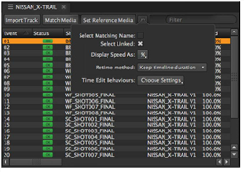
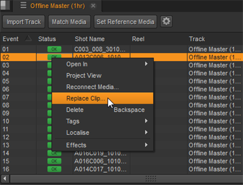

序列中的所有事件都以易于阅读的格式显示在电子表格中，包括状态、所在的轨迹、长度和源文件位置。
符合后，您可以使用电子表格定位源剪辑或替换时间轴中的剪辑实例，以及按摩时间码 (如果它们无效)。
媒体电子表格显示每个条目的当前媒体状态:
•
 -媒体被成功整合，其时间码是正确的。
-媒体被成功整合，其时间码是正确的。
• -媒体成功符合，但时间码目前不正确。
• -媒体不符合。
注意: 任何以黄色突出显示的源或目标字段都表示出于显示目的，该条目已四舍五入。
请参阅 管理时间表 有关导入轨道和参考媒体的更多信息。
电子表格的组织方式与会计电子表格大致相同:
• 右键单击列标题以显示可用的默认列列表。使用复选框启用或禁用每列。
• 单击所需的列，按列标题中的箭头指示，按升序或降序对电子表格进行排序。
• 拖放列标题可根据需要对电子表格重新排序。
• 使用 Python API 添加自定义列，如标记。请参阅 帮助 > 文档 有关 Python API 的更多信息。
还有许多控件，通过单击齿轮图标来访问，这些控件决定了电子表格的外观和行为。

• 选择匹配的名称 -启用时，在电子表格中选择一个项目将突出显示所有同名的项目。
• 选择链接 -启用时，在电子表格中选择一个项目会突出显示与之链接的其他项目，例如用视频轨道摄取的音轨。
• 显示速度为 -设置电子表格速度列中使用的单位。选择 Fps (每秒帧数) 或 % (媒体帧速率的百分比)。
• 重定时方法 -设置的类型 速度 时间轴上应用的重定时。
• 时间编辑行为 -设置源和目标的方式 在 , 出去 ,和 持续时间 计算。
请参阅 重新计时剪辑 有关重定时方法和 时间线编辑工具 用于源/目标计算。
您可以直接从电子表格中定位、显示、重新连接或重命名剪辑实例。
• 保持 Alt 并单击一个条目，将播放头移动到剪辑实例的 在 时间线上的点。
• 保持 Alt 并双击一个条目，将播放头移动到剪辑实例的 在 指向时间线并缩放以适应时间线视图。
• 右键单击电子表格条目，然后选择所需选项:

• 打开 -关联的 bin 剪辑在选定位置打开，如查看器。
• 项目视图 -关联的剪辑在 bin 视图中高亮显示。
• 重新连接媒体 -尝试从磁盘上的指定位置重新连接介质，例如当源最初位于不再连接的驱动器上时。
• 替换夹子 -用指定的源剪辑替换选定的条目。 Nuke 工作室 假设您选择的任何源剪辑都是可以接受的，无论时间码如何。
• 删除 -从电子表格和时间线中删除选定的条目。
• 标签 -允许您直接从电子表格视图向所选内容添加标签。请参阅 使用快速标记 欲了解更多信息。
• 本地化 -允许您从电子表格中控制剪辑、轨迹和序列的本地化。请参阅 本地缓存媒体 欲了解更多信息。
•
影响
-提供访问
|
|